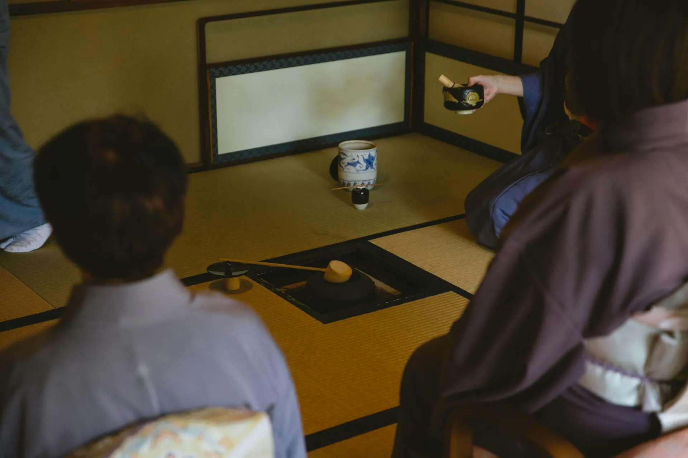
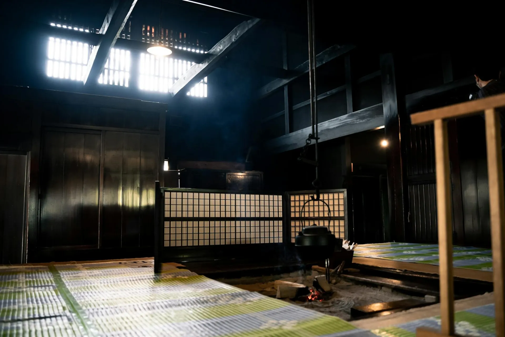

In the third year of Meiji — 1890 — a bamboo craftsman named Toshiro Yamamoto was harvesting grove timber on the forested slopes above Arashiyama when he heard it: the sound of water finding its way through stone. He followed the sound until it became a spring, steam rising from the earth even in summer, and he knew immediately that this place was different.
Toshiro spent three years building the first bathhouse by hand — timber from the bamboo grove, stone hauled from the valley river, clay tiles shaped in the village kiln. He opened the doors in 1893 with four rooms and one communal bath, welcoming travelers who had walked the Tokaido road and needed rest.
One hundred and thirty years later, the spring still flows. The bathhouse walls still carry the cedar scent of Toshiro's original timbers. And the Yamamoto family still greets each guest at the garden gate.

Toshiro Yamamoto discovers the geothermal mineral spring while harvesting bamboo on the Arashiyama slopes. He files a land claim and begins construction of the first bathhouse.
The first four rooms and communal bath welcome guests. Toshiro names the establishment Kuretake — literally "black bamboo" — after the grove that shelters the property.
Second-generation innkeeper Hideo Yamamoto commissions the east moss garden from Kyoto master gardener Sotaro Kida. The three-hundred-year-old stone lantern is acquired from a dissolved temple estate.
Third-generation Michiko Yamamoto builds the private onsen wing, offering individual bath reservations — a concept that would later become standard across Japan's luxury ryokan industry.
Kuretake's kaiseki kitchen receives its first Michelin star under chef Nobuyuki Tanaka, who trained at Kyoto's renowned Nakamura. The tasting menu becomes a destination in itself.
Keiko Yamamoto, eldest daughter of the fourth generation, returns from Tokyo after studying traditional craft preservation. She introduces the Bamboo Grand Suite while restoring the original Matsu Wing to its Meiji-era character.
Each generation of the Yamamoto family has added their own character to Kuretake while preserving its essential soul — the belief that a guest's deepest need is to be seen, cared for, and allowed to rest completely.
Bamboo craftsman, builder, and visionary. Toshiro's genius was recognizing the sacred in the practical — a mountain spring as the source of a life's work. His guests described him as a man of very few words but extraordinary presence.
Hideo doubled Kuretake's capacity and established its reputation for garden design. During the war years he sheltered the property by hosting temple scholars, whose presence infused the ryokan with its enduring spirit of contemplation.
The first woman to lead Kuretake, and arguably its most transformative innkeeper. Michiko introduced private onsen reservations, the seasonal kaiseki concept, and trained the generation of nakai attendants still working at the ryokan today.

Kuretake sits within a privately managed bamboo grove — not the famous tourist corridor, but a wilder, quieter forest that Toshiro Yamamoto began cultivating before the Meiji era ended. Today fourteen acres of black bamboo, timber bamboo, and dwarf bamboo surround the property, creating a living privacy screen that changes with every hour of light.
The forest is not ornamental. We harvest it continuously for construction, food, and craft. The shoot tips that appear in April become ingredients in the kaiseki kitchen. The mature culms replace structural elements in the older buildings. Nothing here is imported; everything is grown, found, or made on this land.
In the early morning, when mist holds in the grove and a nightingale calls from somewhere within it, guests often say they understand for the first time what is meant by ma — that Japanese concept of the sacred interval, the pause that holds more meaning than any sound.